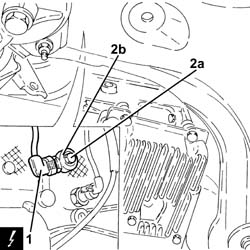
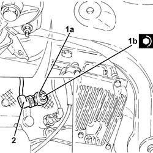

5510C42 KNOCK SENSOR - R+R
- Path
- Procedures > 55 ELECTRICAL EQUIPMENT > 5510 ENGINE IGNITION > 5510C COIL, ECU, SENSORS > 5510C42 KNOCK SENSOR - R+R
- Kind
- repair procedure (removal / refitting; the operation number is the code)
- Applies to
- engines: 1.8 T.SPARK, 2.0 JTS; all production periods
- Interactive page
- https://sloeber94.github.io/elrnDB-aGt/en/#/125001609
Applies to: engines: 2.0 JTS; all production periods
 Removing
Removing
 Refitting
RefittingMake sure that the ignition key is in the OFF position, then disconnect the battery terminal (-).
Description | Connector | |
|---|---|---|
- | Battery | See A1B BATTERY ( BATTERY NEGATIVE ) |
Proceed with the removal
Op. 7055B54 UNDER-ENGINE GUARD - R R.
Proceed with the removal
Op. 1076B18 RIGID SECTION OF EXHAUST PIPE BETWEEN CATALYTIC CONVERTER AND SILENCER - R + R.
1. Disconnect the electrical connection from the knock sensor.
Description | Connector | |
|---|---|---|
1 | Detonation sensor -1 | See K50 DETONATION SENSOR 1 ( CONNECTORS ) |
2. Undo the bolts (2a) and remove the detonation sensor (2b).

Applies to: engines: 2.0 JTS; all production periods
Refitting
Removing1. Position the detonation sensor (1a) in its housing and secure it tightening the bolt (1b) to the recommended torque.
Fastening | Component | Ø | Value (daNm) | |
|---|---|---|---|---|
1b | - | - | - | - |
2. Connect the electrical connection to the detonation sensor.

Applies to: engines: 2.0 JTS; all production periods
Proceed with the refitting
Op. 1076B18 RIGID SECTION OF EXHAUST PIPE BETWEEN CATALYTIC CONVERTER AND SILENCER - R + R.
Proceed with the refitting
Op. 7055B54 UNDER-ENGINE GUARD - R R.
Connect the negative battery terminal (-).
Remove the vehicle from the lift.
Applies to: engines: 1.8 T.SPARK; all production periods
Removing
Refitting- Position the vehicle on a lift.
- Make sure that the ignition key is in the OFF position, then disconnect the battery terminal (-).
- Op. 1072C44 EXHAUST MANIFOLD HEAT SHIELD ON BULKHEAD - R+R
- Op. 1080B40 CATALYTIC PRE-CONVERTER - R R
- Disconnect the electrical connection from the knock sensor.
Description | Connector | |
|---|---|---|
1 | DETONATION SENSOR | See K50 KNOCK SENSOR - 1. |
2. Undo the bolts (2a) and remove the detonation sensor (2b).
Applies to: engines: 1.8 T.SPARK; all production periods
Refitting
Removing- Position the detonation sensor (1a) in its housing and secure it tightening the bolt (1b) to the recommended torque.
Fastening | Component | Ø | Value (daNm) | |
|---|---|---|---|---|
1b | - | KNOCK SENSOR | (Engine crankcase side) |
2. Connect the electrical connection to the detonation sensor.
Applies to: engines: 1.8 T.SPARK; all production periods
- Op. 1080B40 CATALYTIC PRE-CONVERTER - R R
- Op. 1072C44 EXHAUST MANIFOLD HEAT SHIELD ON BULKHEAD - R+R
- Connect the negative battery terminal (-).
- Remove the vehicle from the lift.